I combine the strengths of humans with those of computers, creating visual analytics systems that address today's big data challenges. These systems are brought to bear in a variety of application domains such as social media, cyber security, health care, climate study, and defense.
Bio · Dr. Chad A. Steed is a Computer Science Researcher in the Computational Data Analytics Group at the Oak Ridge National Laboratory (ORNL). He holds a Joint Faculty Appointment with the University of Tennessee's Electrical Engineering and Computer Science Department and he is an Adjunct Professor with Mississippi State University's Department of Computer Science and Engineering. Before joining ORNL in 2010, he spent nine nine years as a scientist at the Naval Research Laboratory at Stennis Space Center, MS. Dr. Steed has a Ph.D. degree in Computer Science from Mississippi State University, where he studied visualization and computer graphics. He also received a B.S. in Software Engineering and a M.S. in Hydrographic Science from the University of Southern Mississippi. Dr. Steed's research spans a range of topics including visual analytics, human-computer interaction, scientific and information visualization, data mining, social media, databases, and web development. His current focus is on the formulation and practical application of big data visual analytics techniques that combine automated analytics with interactive visualizations to enhance cognition and decision support. Dr. Steed is a research affiliate with the ORNL Climate Change Science Institute, the UTK EECS Center for Intelligent Systems and Machine Learning, and the ORNL Biomedical Science and Engineering Center. He has over 60 publications, 1 approved and 2 pending patents, and he won an R&D 100 Award in 2013. Dr. Steed is also a member of ACM, ACM SIGGRAPH, ACM SIGCHI, IEEE, and the IEEE Computer Society.
Selection of Recent Publications (all publications · my publication wordle)
| 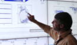 |
Extreme Scale Visual Analytics.
Chad A. Steed, Thomas E. Potok, Laura L. Pullum, Arvind Ramanathan, Galen Shipman, and Peter E. Thornton. 4th SC Workshop on Petascale (Big) Data Analytics, SuperComputing 2013, Denver, CO, Nov. 2013. |
| 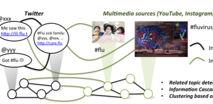 |
Integrating Heterogeneous Healthcare Datasets and Visual Analytics for Disease Bio-surveillance and Dynamics.
Arvind Ramanathan, Laura L. Pullum, Chad A. Steed, Shannon S. Quinn,
Chakra S. Chennubhotla, and Tara Parker. 3rd Interactive Visual Text Analytics Workshop, Atlanta, GA, Oct. 2013. |
| 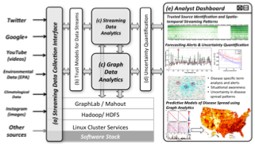 |
Oak Ridge Bio-surveillance Toolkit (ORBiT): Integrating Big-Data Analytics with Visual Analysis for Public Health Dynamics. Arvind Ramanathan, Laura L. Pullum, Chad A. Steed, Shannon S. Quinn,
Chakra S. Chennubhotla. IEEE VAST Workshop on Public Health's Wicked Problems: Can InfoVis Save Lives?
Atlanta, GA, Oct. 2013. |
| 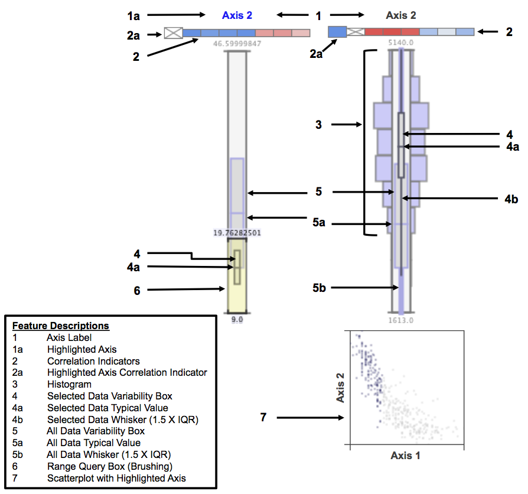 |
Big Data Visual Analytics for Earth System Simulation Analysis.
Chad A. Steed, Daniel M. Ricciuto, Galen Shipman, Brian Smith,
Peter E. Thornton, Dali Wang, and Dean N. Williams.
Computers & Geosciences. 61:71-82, 2013. pdf · project site |
| 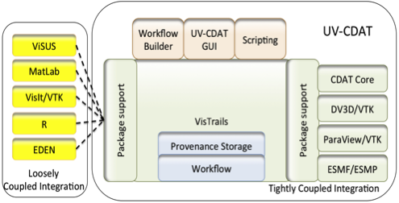 |
The Ultra-scale
Visualization Climate data Analysis Tools (UV-CDAT): Data
Analysis and Visualization for Geoscience Data.
Dean N. Williams, Timo Bremer, Charles Doutriaux, John Patchett,
Sean Williams, Galen Shipman, Ross Miller, David R. Pugmire,
Brian Smith, Chad A. Steed, E. Wes Bethel, Hank Childs,
Harinarayan Krishnan, Prabhat, Claudio T. Silva, Emanuele Santos,
David Koop, Tommy Ellqvist, Jorge Poco, Berk Geveci,
Aashish Chaudhary, Andy Bauer, Alexander Pletzer, Dave Kindig,
Gerald L. Potter, and Thomas P. Maxwell. IEEE Computer.
46(9):68–76, 2013. pdf · project site |
| 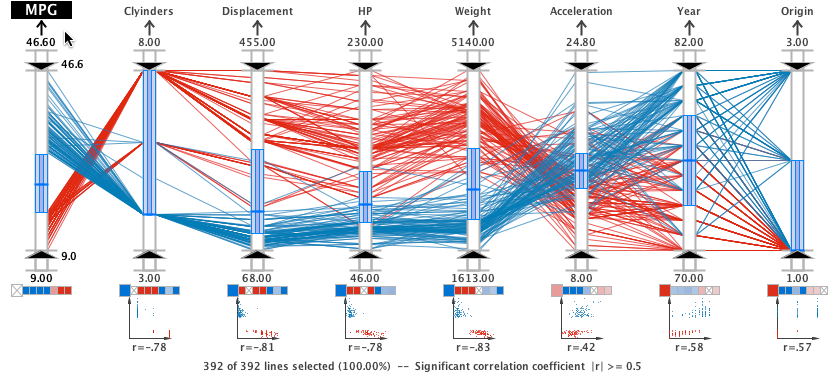 |
A Visual Analytics Approach for Correlation, Classification, and
Regression Analysis. Chad A. Steed, J. Edward Swan II,
Patrick J. Fitzpatrick, T.J. Jankun-Kelly. In
Innovative Approaches of Data Visualization and Visual Analytics, pp. 25-45,
2013. |
| 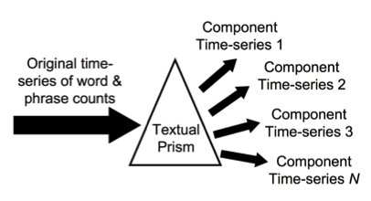 |
Observing Community Resiliency in Social Media. Robert Patton,
Chad A. Steed, Chris G. Stahl, and Jim N. Treadwell.
International Conference on Computational Science and Applications (ICCSA 2013).
June 2013. |
| 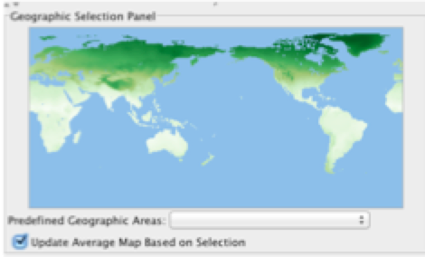 |
ParCAT: Parallel Climate Analysis Toolkit. Brian Smith, Daniel M. Ricciuto,
Peter E. Thornton, Galen Shipman, Chad A. Steed,
and Dean Williams. International Conference on Computational Science. June 2013. |
| 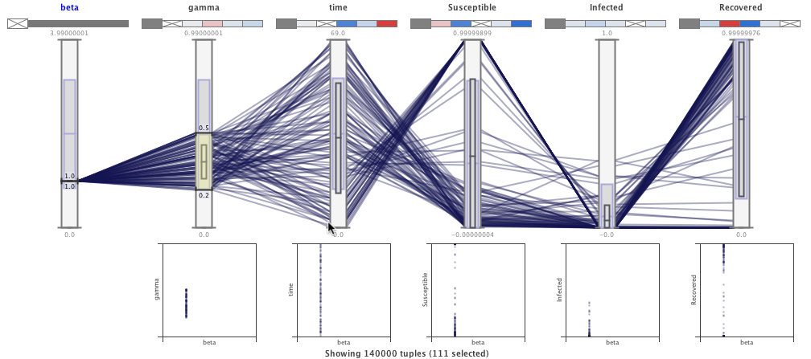 |
Verification of Compartmental Epidemiological Models using Metamorphic Testing, Model Checking and Visual Analytics. Arvind Ramanathan, Chad A. Steed, and Laura L. Pullum. Workshop on Verification and Validation of Epidemiological Models, Washington D.C., Dec. 2012. |
| 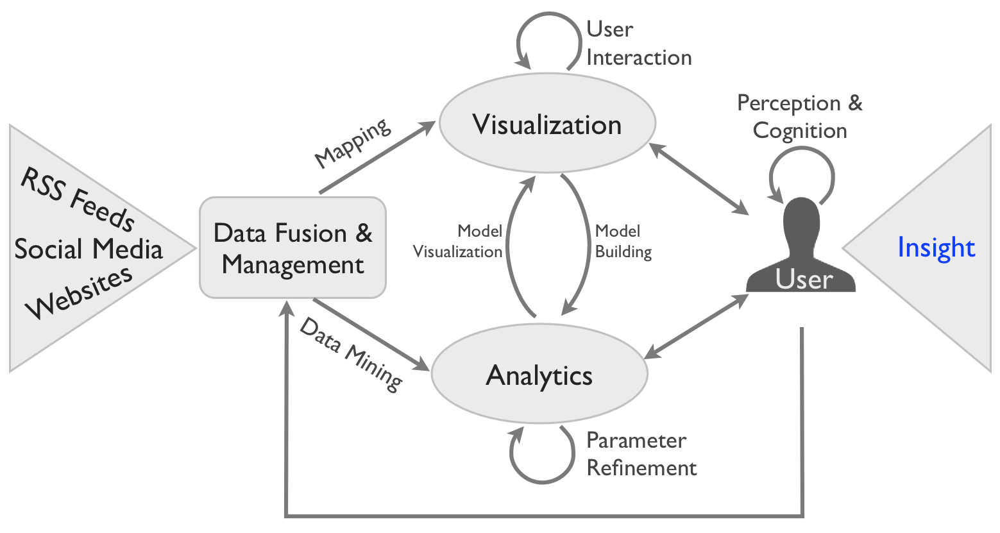 |
Interactive Visual Analysis of High Throughput Text Streams. Chad A. Steed, Thomas E. Potok, Robert M. Patton, John R. Goodall, Christopher Maness, and James Senter, 2nd Interactive Visual Text Analytics Workshop, Seattle, WA, Oct. 2012. |
| 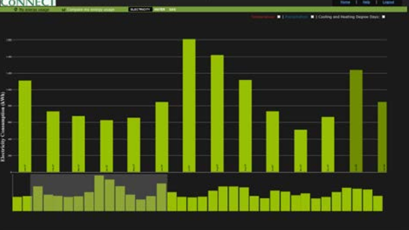 |
An Integrated Geovisual Analytics Framework for Analysis of Energy Consumption Data and Renewable Energy Potentials. Olufemi A. Omitaomu, Christopher S. Maness, Ian S. Kramer, Jeffrey B. Kodysh, Budhendra L. Bhaduri, Chad A. Steed, Rajasekar Karthik, Philip J. Nugent, and Aaron T. Myers. Geospatial Visual Analytics Workshop at GIScience, Columbus, OH, Sep. 2012. |
| 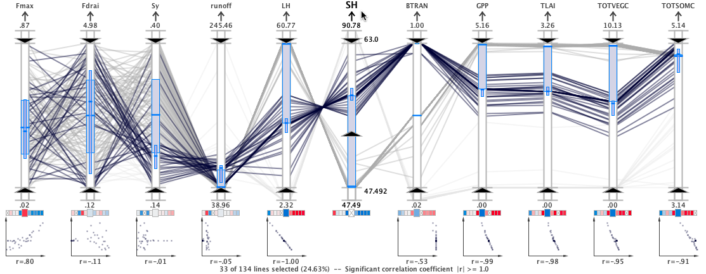 |
Practical Application of Parallel Coordinates for Climate Model Analysis.
Chad A. Steed, Galen Shipman, Peter Thornton,
Daniel Ricciuto, David Erickson, and Marcia Branstetter.
International Conference on Computational Science, Data Mining in Earth
Science, June 2012. pdf · project site · movie |

|
A New Collaborative Tool for Visually Understanding National Health
Indicators. Songhua Xu, Brian Jewell, Chad A. Steed,
and Jack Schryver.
International Conference on Applied Human Factors and
Ergonomics, San Francisco, CA, July 2012. pdf · project site · movie |
| 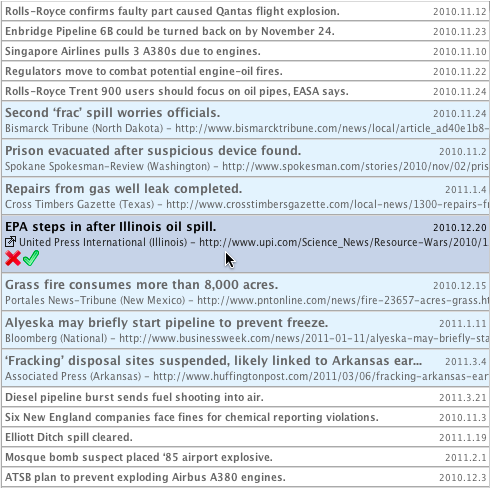 |
Guided Text Analysis Using Adaptive Visual Analytics.
Chad A. Steed, Christopher T. Symons, Frank
A. Denap, and Thomas E. Potok. Visualization and Data
Analysis Conference, San Francisco, CA, Jan. 2012. |
| 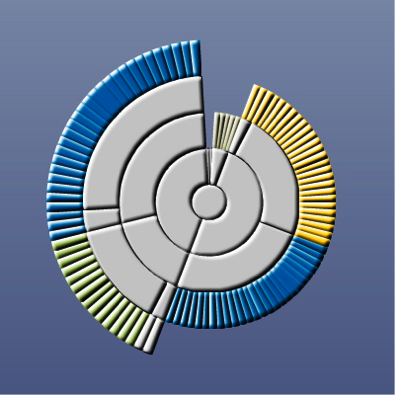 |
Visualization Techniques for Computer Network Defense.
Justin M. Beaver, Chad A. Steed,
Robert M. Patton, Xiaohui Cui, and Matthew Schultz.
Defense and Security Symposium, Orlando, FL, 2011. |
Computer Science Research Staff
Computational Data Analytics Group
Computational Sciences & Engineering
Oak Ridge National Laboratory
Joint Faculty Appointment
Electrical Eng. and Computer Science
University of Tennessee
Adjunct Professor
Computer Science and Engineering
Mississippi State University
csteed@acm.org
Twitter: @docchad
LinkedIn: chadsteed
Online Projects
Flow Vis Experiment 1
Flow Vis Experiment 2
Selected Artistic Works
D3.js Snippets
EDEN
Piranha
Healthcare Indicators Heatmap
P.O. Box 2008, MS-6085
Oak Ridge, TN 37831-6085
(865) 574-7168
Admin: Angie Scott, (865) 241-0331
Affiliations
ORNL Climate Change Science Institute
UT Center for Intelligent Systems and Machine Learning
ORNL Biomedical Science and Engineering Center
Acknowledgements
My work is currently supported by Oak Ridge National Laboratory, the Dept. of Energy, Dept. of Homeland Security.
© Chad A. Steed